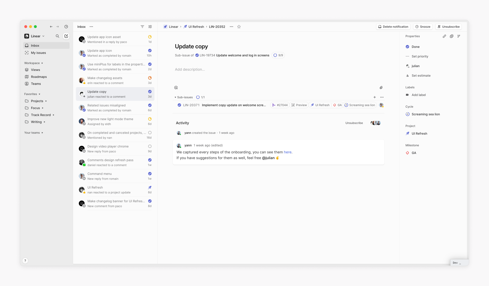
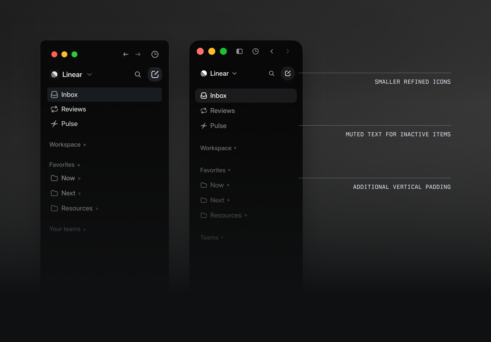
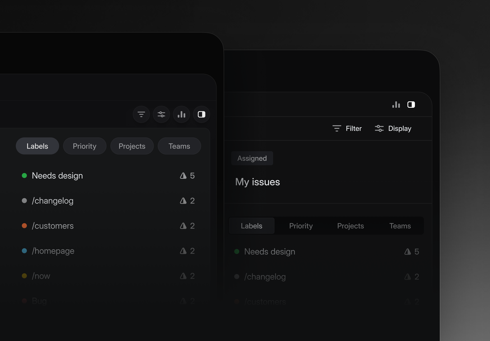
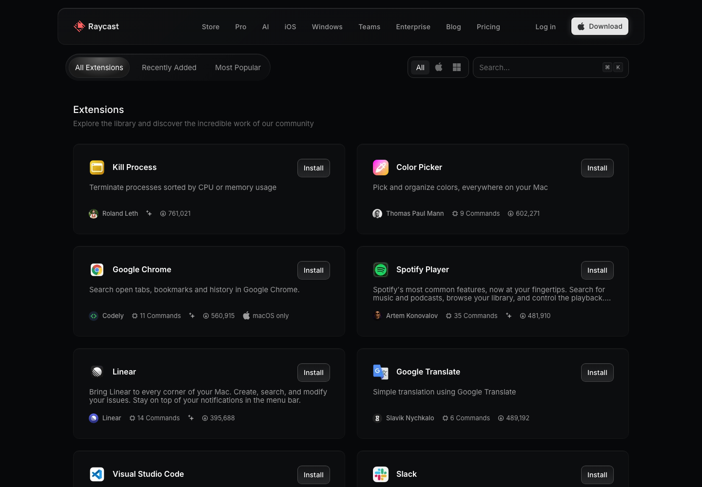
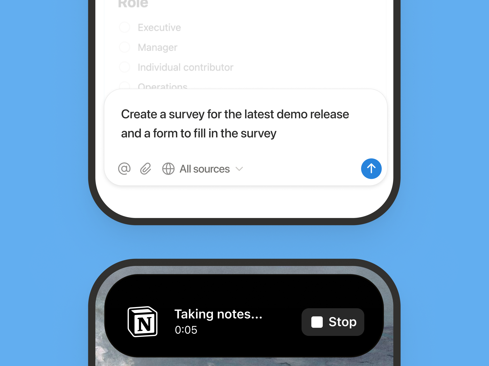

P01 · Linear · 有内容的工作区
桌面导航、列表与内容区
列表、选中项和主内容各有位置，对齐形成稳定结构。
边界：2024 年历史界面；三栏服务于 issue 工作流，不能固定套用到聊天。
6 个按任务选择的参考：工作区、导航、分隔、对话、发现、手机输入。先观察具体机制，再判断我们的界面是否达到相应效果。
本地图可直接预览，不会上传。对照记录需主动下载保存。
这里记录视觉判断。功能检查与独立 AI 设计批评需要另外完成，不能由参考相似度代替。
每张图都已实际打开审阅。按标注范围使用；局部宣传图无法证明完整流程、手机布局或交互质量。图片仅供设计研究。

桌面导航、列表与内容区
列表、选中项和主内容各有位置，对齐形成稳定结构。
边界：2024 年历史界面；三栏服务于 issue 工作流，不能固定套用到聊天。

侧栏、图标和选中态；右侧为新版
当前项突出，非活动项后退，组间空间清楚。
边界：局部放大图；暗色、灰字与图标像素不能直接转换为 O Chat 规范。

工具栏与内容边界；左侧为新版
容器和分隔线按信息关系分组。
边界：重叠的局部展示，不证明完整页面布局；不能为了减线去掉关键标签。
中央聊天区域的过程摘要与结果
行动压成摘要，正文保持连续，产物有具体名称。
边界：理想短对话演示，外框和背景属营销页面；未验证长日志、审批或错误交互。

Explore 条目的名称、能力和行动
名称、说明、来源和行动位置统一，列表可扫描。
边界：扩展安装不是 Agent 信任模型；下载量、品牌、截断方式不照搬。

仅输入区与录音状态的分组
输入、辅助工具和发送分组；录音状态紧邻停止行动。
边界：放大的设备局部图，没有完整聊天视口，不能据此判断整屏手机空间或触控尺寸。